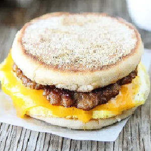

Ingredients
- 150g plant-based sausage.
- 4 plant-based eggs slices
- 4 slices non-dairy Cheddar cheese
- 4 English muffins halved.
- 4 tablespoons margarine.
- 1 tablespoon pure maple syrup
- 100g Hashbrowns
Instructions
- Cook sausages in a large, non-stick sprayed skillet over medium-high heat for 3-4 minutes a side,
or until golden brown and crisp.
- Fry plant-based egg patties 3 minutes on both sides until lightly crispy.
- In a small bowl, whisk margarine and maple syrup until creamy and smooth. Toast the English
Muffins.
- Spread 1 tablespoon of maple spread on English Muffin, both halves.
- Place 1 egg on the bottom of an English muffin then top with cooked sausage and slice of cheese.
- Microwave for 30-60 seconds to melt cheese then cap with English muffin top.
- Continue making other sandwiches.
- Fry hashbrowns over medium heat for 10 minutes and serve with sandwiches.